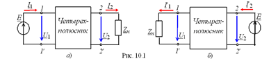
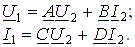
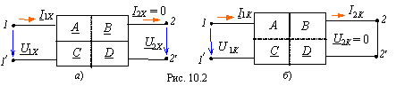
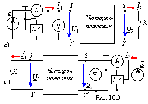
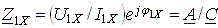
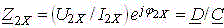
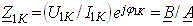
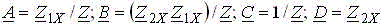
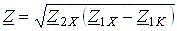
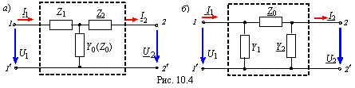

1. ОСНОВНЫЕ ПОЛОЖЕНИЯ
Четырехполюсником (ЧП) называют участок электрической цепи, соединяющейся с её остальной частью с помощью двух пар внешних зажимов (полюсов). При прямой передачи источник энергии Е подключают к входной паре 1 – 1' зажимов, а к выходной 2 – 2' - нагрузку Zн (рис. 10.1, а). При обратной передаче (рис. 10.2, б) источник Е подключают к зажимам 2 – 2', а нагрузку Zн – к зажимам 1 – 1'. Принятые в работе положительные направления напряжений и токов ЧП при прямой и обратной передачах сигнала показаны на рис. 10.1.
В виде четырехполюсника часто представляют такие устройства как трансформатор, транзистор, усилитель, фильтр, телефонную линию, линию электропередачи и др. Теория четырёхполюсника позволяет получить схемы замещения (Т-, П-образные, мостовые) устройств, внутренняя структура которых неизвестна. О таких устройствах говорят, что они представлены в виде "черного ящика".
В данной работе исследуется пассивный проходной четырёхполюсник, для описания которого выбрана А-форма записи уравнений, связывающих токи и напряжения (I1, U1 и I2, U2) на зажимах ЧП:

(10.1)
Комплексные коэффициенты А, В, С и D А-формы определяются внутренней структурой ЧП, значениями параметров входящих в него элементов и частотой входного сигнала. Эти коэффициенты могут быть вычислены по результатам опытов холостого хода (ХХ) и короткого замыкания (КЗ) ЧП.
В предельных режимах работы ЧП (ХХ и КЗ) уравнения (10.1) упрощаются и по ним устанавливают физический смысл коэффициентов.
Так, при ХХ на выходе (ток I2Х = 0, рис. 10.2, а):
А = U1Х/U2Х – отношение комплексов напряжений ЧП в режиме ХХ на зажимах 2 – 2';
С = I1X/U2X – передаточная проводимость (в См) ЧП в режиме ХХ на зажимах 2 – 2';

а при КЗ на выходе (напряжение U2К = 0 (рис. 10.2, б)):
B = U1K /I2K – передаточное сопротивление (в Ом) ЧП при КЗ на зажимах 2 – 2' ;
D = I1K/I2K – отношение комплексов токов на зажимах ЧП в режиме КЗ на зажимах 2 - 2'.
Итак, для определения коэффициентов А-формы ЧП в теоретическом плане достаточно провести два опыта: опыт ХХ и опыт КЗ при прямой передаче. На практике при проведении опытов вольтметр, амперметр и осциллограф, необходимые для измерения тока, напряжения и угла сдвига фаз между ними, включают со стороны только зажимов 1 - 1' или зажимов 2 – 2', т. к. в ЧП не всегда найдётся общая точка (заземления) первичной и вторичной цепей для подключения осциллографа (или ваттметра).
Приведём расчётные формулы для опытного определения коэффициентов А-формы ЧП (рис. 10.3).

Из опыта ХХ при прямой и обратной передачах (рис. 10.3, а и б) находят входные сопротивления:

(cм. уравнения (10.1));
,
а из опыта КЗ (U2 = 0) при прямой передаче (зажимы 2 – 2' закорачивают, см. рис. 10.3, а):
.
Решая полученные три уравнения совместно с уравнением связи коэфициентов в несимметричном пассивном ЧП AD – BC = 1, находят его коэффициенты:
,
где  - расчётный параметр.
Примечание. Для симметричного ЧП, у которого Z1Х = Z2Х и А = D, достаточно провести два опыта: обычно опыт XX и опыт КЗ при прямой передаче.
Параметры схем замещения ЧП связаны с коэффициентами уравнений А-формы следующими соотношениями:
- для Т-образной схемы замещения (рис. 10.4, а):
Y0 = C; Z1 = (A - 1)/C; Z2 = (D - 1)/C.
Обратные соотношения:
A = 1+ Z1Y0; B = Z1 + Z2 + Z1Z2Y0; C = Y0; D = 1+ Z2Y0
(для симметричного ЧП, у которого А = D, Y0 = C; Z1 = Z2 = (A - 1)/C);

- для П-образной схемы замещения (рис. 10.4, б):
Z0 = B; Y1 = (D - 1)B; Y2 = (A - 1)/B.
Обратные соотношения:
A = 1 + Y2Z0; B = Z0; C = Y1 + Y2 + Y1Y2 Z0; D = 1+ Y1Z0
(для симметричного ЧП Z0 = B; Y1 = Y2 = (A - 1)/B).